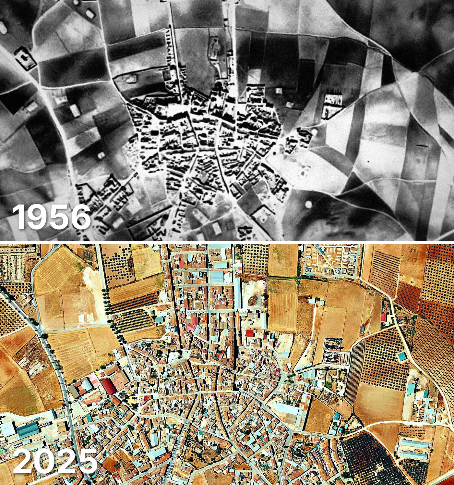

Mollina
Mollina tiene 1.921 edificios y 2.564 viviendas, y 5.528 habitantes en 2025. La mitad de sus edificios es de 1985 o posterior.
Cuándo se construyeron sus edificios
Desde 2015 se han terminado 21 edificios.

Las calles de Mollina con más viviendas
- Calle Real · 100 viviendas
- Avenida de la Fuente Mollina · 71 viviendas
- Calle de la Alameda · 58 viviendas
- Calle Carreteros · 56 viviendas
- Calle Sierra de la Camorra · 55 viviendas
- Calle Antequera · 53 viviendas
- Calle los Guindos · 51 viviendas
- Calle los Perales · 50 viviendas
- Calle Humilladero · 44 viviendas
- Calle Pedro Salinas · 43 viviendas
Toda la información de Mollina en CASAS.ES →
Fotos de Mollina para publicar
Estas fotos aéreas de Mollina, de 1956 y de 2025, se pueden publicar gratis en un periódico, un blog, la web del ayuntamiento o las redes, citando la fuente como se indica debajo.

Descargar: las dos juntas · 1956 · 2025 (JPG, 1.400 px de ancho)


Texto listo para publicar
Mollina desde el aire: así era en 1956 y así es en 2025
Las dos fotos muestran el mismo encuadre de Mollina con 69 años de diferencia: arriba, el Vuelo Americano de 1956; abajo, la foto aérea del PNOA de mayo de 2025. Hoy Mollina tiene 1.921 edificios y 2.564 viviendas, y 5.528 habitantes en 2025. La mitad de sus edificios es de 1985 o posterior. El 35 % de sus edificios se ha levantado desde el año 2000.
Más datos de Mollina en CASAS.ES: casas.es/malaga/mollina
Cita para copiar
Fotos: Vuelo Americano Serie B (1956-57) y PNOA 2025, cedidos por © Instituto Geográfico Nacional (CC BY 4.0, scne.es). Datos y composición: <a href="https://casas.es/malaga/mollina/">los datos de Mollina en CASAS.ES</a>Descarga: municipios (CSV) · calles (CSV) · Wikidata (Q1630374) · cómo usarlos en Python (dev.to) · también en OSF, Figshare y B2SHARE